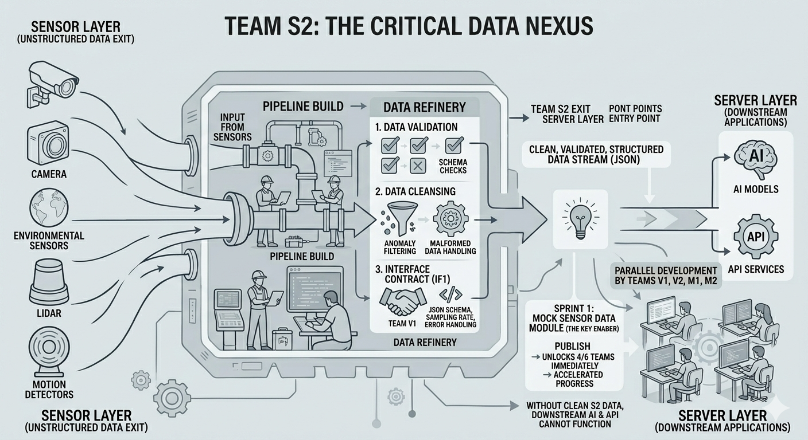

S2 · Data Acquisition & Mock Generator
Without clean, structured sensor data, the entire system stalls. S2 is the pipeline that makes everything else possible.
S2 at a Glance
S2 sits at the junction between raw physical sensors and the intelligent server layer. Every byte of motion data that V1, V2, M1, and M2 depend on passes through our pipeline first.

System Architecture
The system is divided into three functional layers — Sensor, Server, and Monitor — following a balanced 2-2-2 distribution. Each layer develops independently, with formally defined interface contracts enabling true parallel development across all six teams.
| Layer | Team | Lead | Main Responsibility |
|---|---|---|---|
| Sensor | S1 — Firmware & Protocol | Zhihang Yu | Sensor firmware, wireless protocol, data packet format |
| Sensor | S2 — Data Acquisition & Mock Generator ★ | Zhiqi Zhang | Data pipeline, validation & cleansing, mock data module |
| Server | V1 — AI & Motion Recognition | Diogo Borges | Deep learning model integration, motion analysis pipeline |
| Server | V2 — Backend API & Storage | Sergio Moniz | REST/WebSocket API, database, recommendation engine |
| Monitor | M1 — Patient Mobile App | Diogo Pinhel | Real-time rehabilitation feedback mobile interface |
| Monitor | M2 — Clinical Web Dashboard | Yihang Li | Historical recovery dashboard, 3D limb reconstruction |
Interface Contracts
Two interface contracts formally define how data flows between layers. S2 co-owns IF1 — the earlier of the two — and its timely definition directly determines when the rest of the project can begin real development.
S2 Responsibilities
S2's four core responsibilities are tightly sequenced — each one is a prerequisite for the next, and the first two are mandatory Sprint 1 deliverables that the rest of the project waits on.
A software module that generates realistic, schema-compliant sensor data streams without any physical hardware. Once published, it immediately unblocks Teams V1, V2, M1, and M2 to begin their own development in parallel.
Co-authored with V1's System Architect, IF1 defines the exact JSON schema, sampling rate, error codes, and MQTT structure for all Sensor → Server communication. Frozen by end of Sprint 1, it becomes the immutable contract both layers build against.
The full production pipeline from physical IMU sensor hardware to the server entry point — including transmission handling, connection management, and forward-compatibility with the frozen IF1 contract.
Incoming packets are checked against the IF1 schema, anomalies are filtered, and malformed data is handled gracefully before anything reaches V1 or V2. Downstream AI models are only as good as the data they receive.
By the Numbers
How We Work
A 7–8 hour timezone gap between Lisbon and Changchun is not an obstacle — it is a constraint we have built our workflow around. Async-first communication and a clear shadow-PM structure mean the team never fully stops.
Cross-testing model: There is no dedicated Tester role. Instead, the Portuguese and Chinese programmers formally review and test each other's code. Independent verification across timezones is the quality gate.